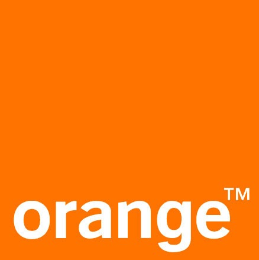
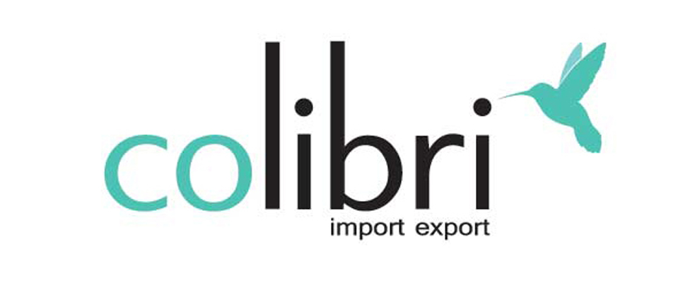
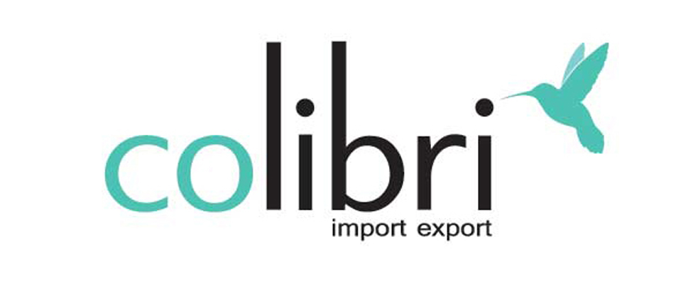
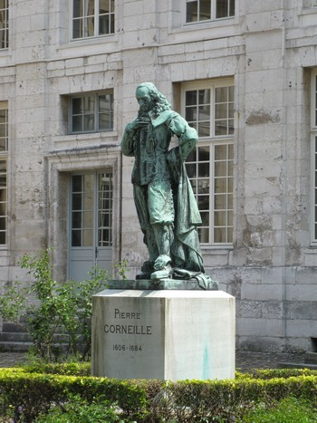

Profile Page or "Who the heck is that Guy!?"
My name is Guillaume SAUSSAY.
My goal is to make a strong and positive impact in people lives through my high spirit and my work.
I am currently working as Technical Project Manager at WorkIT Software.
PROFESSIONAL EXPERIENCE
Technical Project Manager at WorkIT Software
With more than 180 customers in Europe, WorkIT Software is the leader of big data for the e-commerce industry. Thanks to its worldwide database, product catalog, analysis software, alert and benchmark, WorkIT Software provides a 360° real time market vision to its customers.
Trusted by the leading names of the industry, WorkIT Software's specialities are its leading competitive monitoring intelligence solutions and expertise in enabling brands, manufacturers and retailers to profitably manage channel issues and competitive situations. Our innovative web-crawling and product-matching technology benefit our clients, retailers and suppliers, in measuring and managing their price and product position. WorkIT Software’s solutions serve more than 180 customers in 17 countries, in diverse markets from domestic appliances or electronic devices to toys and fashion.
Our goal is to provide meaningful and seamless services to their clients. Additionally, I am particularly eager to create great work conditions together with my team in a pleasant but agile and pragmatic environment where everyone can contribute to the fullest at their own scale and capabilities. I am truly convinced that this is a necessity to create innovation and disruption in such a new market.
Project Management Intern, then Technical Project Manager and finally Orange Beacon CTO at Orange Vallée

"Orange Vallée" is an incubation program of Orange SA working on the most innovative products of the brand. Together, the team creates the products and services of tomorrow which already have a strong and positive impact in their customers' lives. One of the main reasons for their success is that they always keep an open mind where innovation, boldness and passion rhythm our lives and make us smile. I was particularly proud to be CTO in such a stimulating environment.
I worked with the amazing Orange Beacon Team on several disruptive, beacon related professional projects. Together, we create, develop and make available to our clients exceptional IoT connected devices able to create a smarter environment and enrich people's everyday life.
One of the biggest projects we worked on is a national beacon network in France called Le réseau Beacon.
Le réseau Beacon consists of thousands of Beacon covering Paris and the main cities in France. With this network, advertising adgencies can reach millions of pedestrians and trigger the sending of geolocalized notifications at precise location in the city.
I also worked from scratch on a B2C mobile app - Beacon Connect - currently available on Google Play and the Apple App Store. This app allows users to interact with our Orange Beacon Tag and create their own use-cases. They can automatically launch their TV guide app when they move closer to their screen, open a recipe website when they enter their kitchen, create personalized alerts and reminders according to their needs, automatically send an SMS or make a phone call when they leave home, there is no limit to the services that Beacon Connect can provide to people's everyday life!
Working at Orange Vallée was an amazing experience I can recommend to anyone having the entrepreneur DNA.
E-Commerce/Web Developer at Colibri Import-Export

Attracted by such rich and challenging fields as computing and the Internet, and particularly excited at the thought of improving my skills in web development, I decided to dedicate my first year internship in Graduate school (ENSEA) (from June to August 2012) at the implementation of an e-commerce website for an import-export company: Colibri Import-Export.
This website had to be multilingual (English/French/German), multi-store with unique stock and customer volume pricing plan, implemented on Magento, the number one e-commerce platform in the world.
Having fulfilled the requirements in the specifications in two weeks, all worked very well, until that day when we were confronted at one of the most important crisis encounter by the company...
Two out of the three servers we owned were hacked by someone who once worked there. Because of that, three out of the six e-commerce websites weren't working anymore; among these ones was the one on which the company had the most profit with and the one I was working on. It was a shock for everyone, but quickly, we tried to understand what happened and how to recover from this situation. At the beginning, the company CEO wanted to call freelancers developers to quickly build new websites in order to limit our loss. Nevertheless, he decided to trust me and my abilities and asked me to do the job. I was then promoted group leader of 5 others trainees and we worked on migrating back-ups of the 3 websites into the Prestashop platform, the number one e-commerce solution in Europe. This choice was motivated by the CEO and one of the consultants which were more confident in its fonctionalities to manage the "one stock for multi-store" requirement. It took me one month during which I also made pieces of maintenance and renewal work of the showcase websites of the company (with one of them realized using the CMS Drupal and the other one with basic HTML/CSS). After this month, we successfully managed to finish the websites with new features and designs and to incorporate them into the company information system architecture.

This training course was really an extraordinary experience. It was not only a chance to apply the theoretical knowledge I learned in school but also an opportunity to go further into a work I loved in a professional but really friendly environment. I truly enjoyed these moments spent there just as the team and the job I made.
Thanks to this training, I improved my computing skills (HTML/CSS, PHP, SQL script writing), had a better understanding of website and database development tools (Apache, mySQL, phpMyAdmin) and familiarized myself with the OsCommerce e-commerce solution. Moreover, I delved deeply into the Magento and Prestashop management and exploited their tools into the realization of important and even critical modules in term of security, such as online payment modules, customer volume pricing plans (now automatically lavished for the last updates of Prestashop) and SQL script writing when I wanted to align the prices with those of the different delivery services.
The CEO of the company, decided after these 6 weeks of internship to hire me as a E-Commerce Web Developer during 4 other months to continue optimizing the websites and provide services and advices for their future development.
Following the internship period, I continued to optimize the realized websites including the multilingual (English, French, German) e-commerce site on Magento I built, three websites on Prestashop and two showcase websites of the company with one of them realized with Drupal.
Additionally, I migrated 2 others e-commerce websites beforehand realized with Magento and OsCommerce to the Prestashop solution.
Aside from the necessary pieces of maintenance and renewal work made through this period (achieved while continued my studies at the ENSEA), I wrote also two documentations listing the tasks performed as well as one user & maintenance guide of the websites in-order-to facilitate the work of the Colibri Import-Export's staff.
This experience allowed me to acquire work experience, management and e-commerce development skills. Also and in particular, it allowed me to discover an entire professional area, area for which I have a strong desire to continue going further into: Software Engineering & Web Development.
Project Management Intern, then Technical Project Manager and finally Orange Beacon CTO at Orange Vallée
"Orange Vallée" is an incubation program of Orange SA working on the most innovative products of the brand. Together, the team creates the products and services of tomorrow which already have a strong and positive impact in their customers' lives. One of the main reasons for their success is that they always keep an open mind where innovation, boldness and passion rhythm our lives and make us smile. I was particularly proud to be CTO in such a stimulating environment.
I worked with the amazing Orange Beacon Team on several disruptive, beacon related professional projects. Together, we create, develop and make available to our clients exceptional IoT connected devices able to create a smarter environment and enrich people's everyday life.
One of the biggest projects we worked on is a national beacon network in France called Le réseau Beacon.
Le réseau Beacon consists of thousands of Beacon covering Paris and the main cities in France. With this network, advertising adgencies can reach millions of pedestrians and trigger the sending of geolocalized notifications at precise location in the city.
I also worked from scratch on a B2C mobile app - Beacon Connect - currently available on Google Play and the Apple App Store. This app allows users to interact with our Orange Beacon Tag and create their own use-cases. They can automatically launch their TV guide app when they move closer to their screen, open a recipe website when they enter their kitchen, create personalized alerts and reminders according to their needs, automatically send an SMS or make a phone call when they leave home, there is no limit to the services that Beacon Connect can provide to people's everyday life!
Working at Orange Vallée was an amazing experience I can recommend to anyone having the entrepreneur DNA.
E-Commerce/Web Developer at Colibri Import-Export

Attracted by such rich and challenging fields as computing and the Internet, and particularly excited at the thought of improving my skills in web development, I decided to dedicate my first year internship in Graduate school (ENSEA) (from June to August 2012) at the implementation of an e-commerce website for an import-export company: Colibri Import-Export.
This website had to be multilingual (English/French/German), multi-store with unique stock and customer volume pricing plan, implemented on Magento, the number one e-commerce platform in the world.
Having fulfilled the requirements in the specifications in two weeks, all worked very well, until that day when we were confronted at one of the most important crisis encounter by the company...
Two out of the three servers we owned were hacked by someone who once worked there. Because of that, three out of the six e-commerce websites weren't working anymore; among these ones was the one on which the company had the most profit with and the one I was working on. It was a shock for everyone, but quickly, we tried to understand what happened and how to recover from this situation. At the beginning, the company CEO wanted to call freelancers developers to quickly build new websites in order to limit our loss. Nevertheless, he decided to trust me and my abilities and asked me to do the job. I was then promoted group leader of 5 others trainees and we worked on migrating back-ups of the 3 websites into the Prestashop platform, the number one e-commerce solution in Europe. This choice was motivated by the CEO and one of the consultants which were more confident in its fonctionalities to manage the "one stock for multi-store" requirement. It took me one month during which I also made pieces of maintenance and renewal work of the showcase websites of the company (with one of them realized using the CMS Drupal and the other one with basic HTML/CSS). After this month, we successfully managed to finish the websites with new features and designs and to incorporate them into the company information system architecture.
This training course was really an extraordinary experience. It was not only a chance to apply the theoretical knowledge I learned in school but also an opportunity to go further into a work I loved in a professional but really friendly environment. I truly enjoyed these moments spent there just as the team and the job I made.
Thanks to this training, I improved my computing skills (HTML/CSS, PHP, SQL script writing), had a better understanding of website and database development tools (Apache, mySQL, phpMyAdmin) and familiarized myself with the OsCommerce e-commerce solution. Moreover, I delved deeply into the Magento and Prestashop management and exploited their tools into the realization of important and even critical modules in term of security, such as online payment modules, customer volume pricing plans (now automatically lavished for the last updates of Prestashop) and SQL script writing when I wanted to align the prices with those of the different delivery services.
The CEO of the company, decided after these 6 weeks of internship to hire me as a E-Commerce Web Developer during 4 other months to continue optimizing the websites and provide services and advices for their future development.
Following the internship period, I continued to optimize the realized websites including the multilingual (English, French, German) e-commerce site on Magento I built, three websites on Prestashop and two showcase websites of the company with one of them realized with Drupal.
Additionally, I migrated 2 others e-commerce websites beforehand realized with Magento and OsCommerce to the Prestashop solution.
Aside from the necessary pieces of maintenance and renewal work made through this period (achieved while continued my studies at the ENSEA), I wrote also two documentations listing the tasks performed as well as one user & maintenance guide of the websites in-order-to facilitate the work of the Colibri Import-Export's staff.
This experience allowed me to acquire work experience, management and e-commerce development skills. Also and in particular, it allowed me to discover an entire professional area, area for which I have a strong desire to continue going further into: Software Engineering & Web Development.
EDUCATION

I currently hold two masters degree: one Master of Science Degree in Computer Engineering from the Illinois Institute of Technology in Chicago, Illinois (United States) and one Master of Science Degree in Electrical and Computer Engineering from the ENSEA in Paris Area (France).
During the first formation, I especially specialised myself in Software Engineering, Network and Telecommunications. My overall GPA was 3.50/4.0 and my grade repartition worked as follow:
First Semester
-
CS 450: Operating Systems (A)
-
ECE 408: Introduction to Computer Networks (B)
-
ECE 429: Introduction to VLSI Design (A)
-
ECE 567: Statistical Signal Processing (A)
-
ECE 740: Telecom Networks: Requirements to Deployment (A)
Second Semester
-
CS 522: Advanced Data Mining (B)
-
CS 551: Operating Systems Design & Implementation (B)
-
ECE 516: Coding for Distributed Storage Systems (B)
-
ECE 545: Advanced Computer Networks (B)
At ENSEA - a Graduate School in Electrical Engineering, Computer Science and Telecommunications - I was above all excellent in Mathematics, Theoretical Physics and Signal Processing. Furthermore, I took special courses in Programming Languages and Application Development. My overall GPA was 3.76/4.0 and my grade repartition for my major courses I took worked as follow:
-
Advanced Probability and Statistics (A)
-
Signal Processing (A)
-
Advanced Analog and Digital Electronics (B)
-
Signal Transmission (A)
-
Theoretical and Quantum Physics (A)
-
Management, Communication (A)
-
Advanced Java Programming (A)
-
Android Application Development (A)
-
Numerical Analysis (A)
-
C Programming (B)
-
Technical Project (A)

Before having been able to enter in Graduate School, and after having passed my French 'Baccalauréat', I spent two years in 'Classes Préparatoires aux Grandes Écoles' which are two years of highly selective preparatory classes to enter Graduate School. Only the elite can be accepted there to learn and acquire an excellent level in Mathematics and Physics; it was my case. I was in one of the top 20 (over more than 200 'Classe Prépa'): the one of Pierre Corneille in Rouen.
These two years of preparatory classes were absolutely incredible! They were really hard and focused on a really high level in Mathematics (Algebra and Analysis), Physics (Mechanics, Optics, Electronics, Thermodynamics and Chemistry) and Science in Engineering. Thanks to this experience, I was able to acquire really strong and robust learning and working skills just as the will to never stop or abandon and to always give the best of myself in all circunstances.
You can also consult my LinkedIn profile if you want more information or connect!
First Semester
- CS 450: Operating Systems (A)
- ECE 408: Introduction to Computer Networks (B)
- ECE 429: Introduction to VLSI Design (A)
- ECE 567: Statistical Signal Processing (A)
- ECE 740: Telecom Networks: Requirements to Deployment (A)
Second Semester
- CS 522: Advanced Data Mining (B)
- CS 551: Operating Systems Design & Implementation (B)
- ECE 516: Coding for Distributed Storage Systems (B)
- ECE 545: Advanced Computer Networks (B)
- Advanced Probability and Statistics (A)
- Signal Processing (A)
- Advanced Analog and Digital Electronics (B)
- Signal Transmission (A)
- Theoretical and Quantum Physics (A)
- Management, Communication (A)
- Advanced Java Programming (A)
- Android Application Development (A)
- Numerical Analysis (A)
- C Programming (B)
- Technical Project (A)